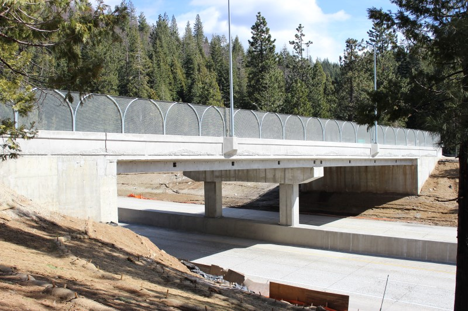
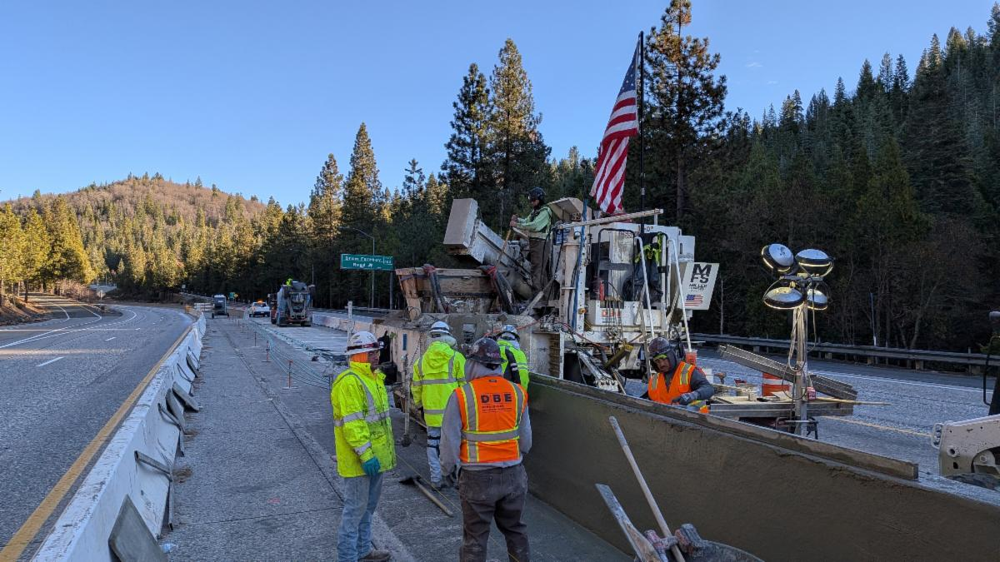
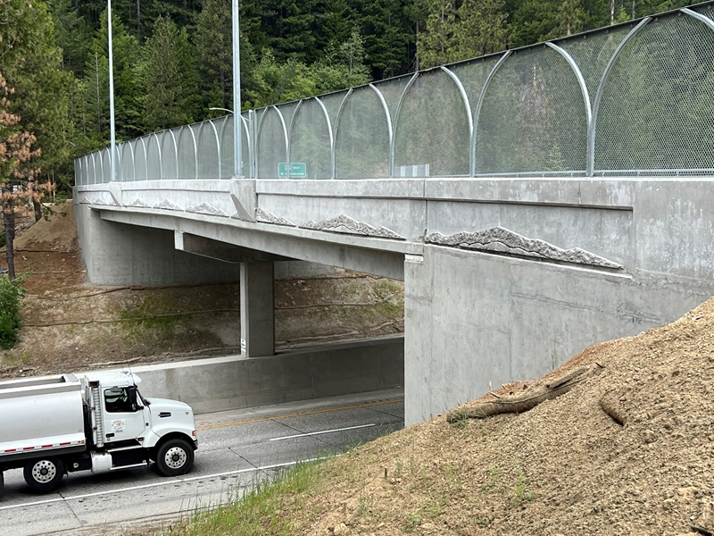
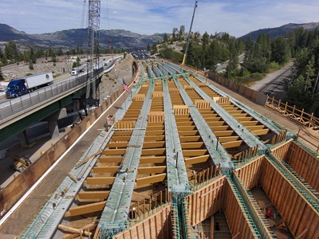

Project Details
- Category: Source Inspection Projects
- Owner: Caltrans District 3
- Location: Placer County, CA
- Delivery Method: Project-specific delivery
- Status / Completion: Ongoing

This bridge replacement project along Interstate 80 was initiated by Caltrans to improve vertical clearances, structural capacity, and roadway safety along a critical freight and interstate commerce corridor serving Northern California and cross-country truck routes. Several aging overcrossings were structurally deficient and created clearance restrictions that diverted heavy vehicles onto local roads, creating congestion and safety hazards.
S2 Engineering supported Caltrans Office of Quality Assurance and Source Inspection through full-time fabrication and materials oversight. Our inspectors performed: � Source inspection of prestressed concrete girders at fabrication facilities � Verification of tensioning operations and strand placement � Inspection of reinforcing cages and embedments � Welding inspection of steel components � Review of shop drawings, RFIs, and material submittals � Field verification of delivered structural elements S2 also provided specialized materials engineering support for complex repair activities including epoxy injection systems and structural rehabilitation techniques.
S2�s continuous fabrication presence prevented production errors that could have resulted in costly re-casting of girders and schedule setbacks. Early identification of dimensional and reinforcement issues saved months of potential delay while ensuring Caltrans structural standards were fully achieved.
22 150 bridge photo

27431fb4 9a3d 4b47 a385 d4fd1a74c297

baxter 2

S1000100